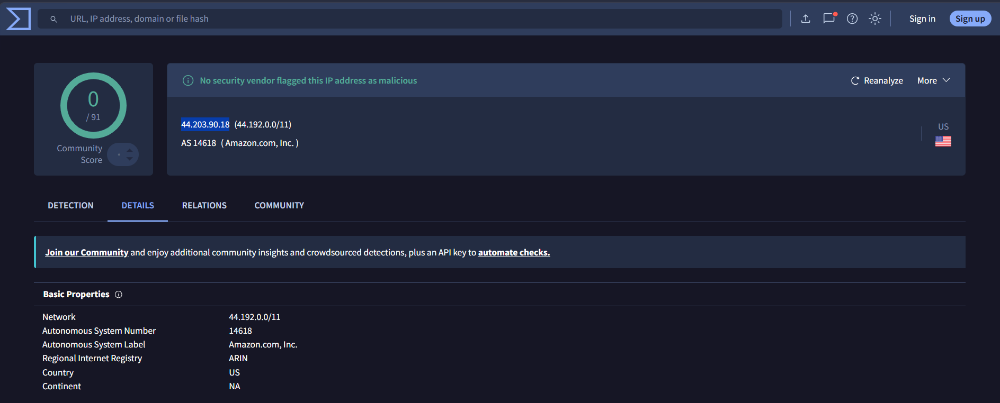

SOC-102: Connection to Newly Registered Domain
Bài lab mô phỏng quy trình SOC Analyst điều tra một workstation truy cập domain mới đăng ký. Trọng tâm là xác minh alert bằng nhiều nguồn log: SIEM alert, proxy log, threat intelligence, endpoint process và business context trước khi đưa verdict.
Executive Summary
SOC nhận alert SOC-102: Connection to Newly Registered Domain khi workstation FIN-WIN-001 truy cập domain cdn-assets.finovabank-promo.com. Domain được đăng ký gần thời điểm alert và trỏ về IP 44.203.90.18 trên AWS, nên cần được xác minh như một suspicious observable.
Kết quả điều tra cho thấy user truy cập bằng Chrome, proxy log chỉ ghi nhận static assets như styles.css và banner.jpg, VirusTotal không đánh dấu IP là malicious, đồng thời email nội bộ xác nhận domain thuộc chiến dịch Marketing. Vì vậy, alert được phân loại là False Positive · Authorized Marketing Activity.

Alert Context & IOCs
| Observable | Analyst interpretation |
|---|---|
| Newly registered domain | Tín hiệu đáng nghi ban đầu vì domain mới thường được dùng trong phishing, malware delivery hoặc campaign tạm thời. |
| finovabank-promo.com | Tên domain chứa keyword giống thương hiệu/ngân hàng và từ khóa promo; cần kiểm tra có phải marketing hợp lệ hay phishing giả mạo. |
| AWS hosting | AWS là cloud provider hợp lệ nhưng cũng có thể bị lạm dụng; không thể kết luận chỉ dựa trên provider. |
| Successful access | Proxy cần được kiểm tra để biết user tải file gì, status code, size và user-agent. |
Objective & Scope
Objectives
- Xác minh alert có hợp lệ và có đủ dữ liệu để điều tra không.
- Kiểm tra FIN-WIN-001 có thực sự kết nối đến domain nghi vấn không.
- Đánh giá domain/IP có dấu hiệu phishing, malware, C2 hoặc hạ tầng độc hại không.
- Xác định process/user tạo ra kết nối.
- Tìm business context để phân loại true positive hay false positive.
Scope boundary
- Case tập trung vào initial triage của SOC L1, không giả định compromise nếu chưa có malware/process bất thường.
- Threat intelligence 0 detection không đủ để kết luận an toàn tuyệt đối; cần kết hợp proxy và endpoint evidence.
- Verdict chỉ áp dụng cho domain/campaign đã xác minh trong case này.
Evidence Review


| Evidence source | Observed evidence | Analyst value | Impact on verdict |
|---|---|---|---|
| Proxy log | URL truy cập: /styles.css và /banner.jpg; status 200; user-agent Mozilla/Chrome. | Xác nhận user đã load nội dung web tĩnh, không thấy executable download. | Giảm khả năng malware delivery. |
| Endpoint context | Process tạo kết nối là chrome.exe, parent process là explorer.exe, user thuy.le@finova.one. | Phù hợp với hành vi browsing bình thường, không phải PowerShell/CMD/script tự động. | Giảm khả năng automated malware connection. |
| Threat intelligence | VirusTotal ghi nhận IP 44.203.90.18 không bị vendor đánh dấu malicious trong case. | IP chưa được xác nhận là malicious IOC. | Chỉ giữ mức suspicious observable. |
| Email security / business context | Email nội bộ thông báo domain finovabank-promo.com dùng cho Q4 Marketing Campaign. | Cung cấp business justification và khớp với ngày launch Oct 8. | Chuyển verdict sang false positive hợp lệ. |


Investigation Workflow
- Validate alert fields: ghi nhận event ID, rule name, severity, hostname, internal IP, destination domain/IP và alert time.
- Check domain/IP reputation: tra cứu VirusTotal/AbuseIPDB/OTX/urlscan để xác định observable đã bị cộng đồng đánh dấu hay chưa.
- Pivot to proxy logs: kiểm tra user truy cập URL nào, HTTP method/status, file extension, size và user-agent.
- Check endpoint process: xác định process tạo kết nối là browser hợp lệ hay process đáng nghi như powershell.exe, mshta.exe, wscript.exe, rundll32.exe.
- Validate business context: kiểm tra email/internal ticket để biết domain có thuộc chiến dịch Marketing/IT hợp lệ không.
- Classify verdict: nếu có business justification, không có file độc hại và không có process bất thường, phân loại false positive.
Final Verdict
Verdict: False Positive · Legitimate Marketing Domain.
Reason: Domain mới đăng ký nhưng đã được thông báo nội bộ cho SOC Team, proxy log chỉ ghi nhận static assets, user truy cập bằng Chrome, không thấy executable download, và IP không bị đánh dấu malicious trong kiểm tra threat intelligence của case.
Malicious activity: Not confirmed.
Recommended status: Close case after documenting evidence and tuning notes.
Confidence: Medium-to-high for false positive trong phạm vi evidence hiện có; vẫn cần theo dõi nếu domain phát sinh HTTP POST, file download hoặc nhiều host truy cập bất thường.
Recommendations
- Thêm finovabank-promo.com vào approved domain list/whitelist có thời hạn và ghi chú owner là Marketing.
- Tuning rule để loại trừ các company-related domains đã được xác minh, nhưng không whitelist toàn bộ wildcard nếu chưa có kiểm soát.
- Thiết lập quy trình Marketing/IT thông báo SOC trước khi đăng ký domain mới.
- Giữ monitor rule cho hành vi rủi ro: executable download, suspicious script, HTTP POST credential, nhiều host truy cập bất thường hoặc domain chuyển sang IP khác.
- Chuẩn hóa case template để bắt buộc có: TI result, proxy evidence, endpoint process, business owner và final verdict.
Limitations & Next Improvements
- Bổ sung screenshot endpoint process tree nếu lab platform có cung cấp.
- Thêm DNS log để xác định resolver, query time và có host khác cùng query domain không.
- Thêm rule correlation: newly registered domain + executable download + low reputation + unknown user-agent sẽ tăng severity.
- Lập bảng approved business domains theo owner, purpose, start/end date và ticket reference.